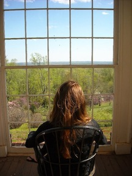

About Me
I am an M.A. student in History at George Mason University. My primary interest is in the social and cultural history of the 18th and early 19th century South. I have worked at numerous historical sites in order to pursue my passion for historical research, interpretation and material culture.
The nitty-gritty of it is…history is my passion and I want others to be able enjoy and learn from our past too — whether it be through documents, museums or websites.
This means you may see me in colonial-period clothing on any given weekend.